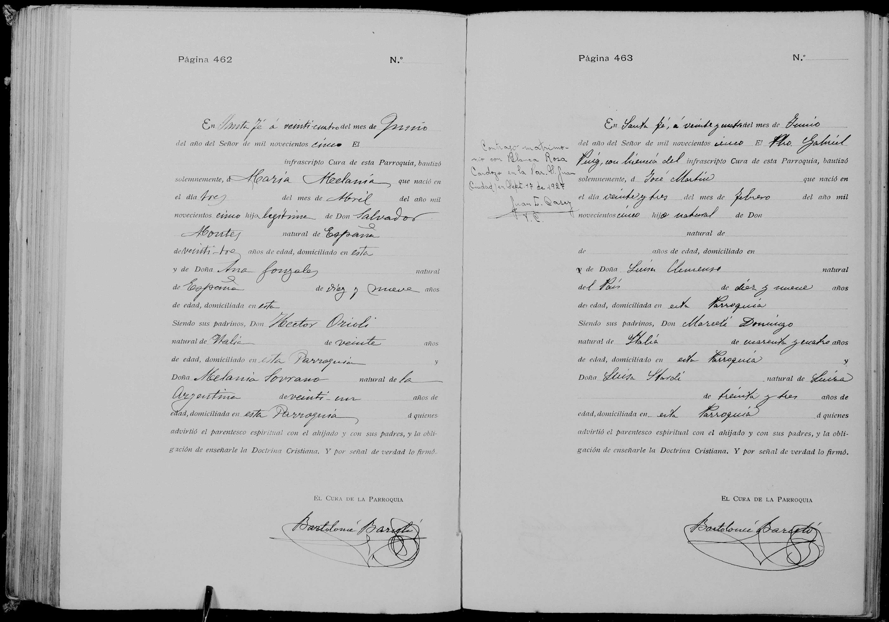

La historia
José Martín nació el 23 de febrero de 1905 en Santa Fe y fue bautizado cuatro meses después, el 24 de junio de 1905, en la parroquia de Nuestra Señora del Carmen, por el Pbro. Gabriel Puig con licencia del cura Bartolomé Bargalló (lectura insegura). El acta lo declara «hijo natural» de Doña Luisa Clemenzo —Maria Luisa Clemenzo Roh, «natural del País, de diez y nueve años, domiciliada en esta Parroquia»— y deja al padre en blanco: ni siquiera un nombre. Es el caso de filiación más desnudo de la colección: madre soltera de 19 años, padre no declarado.
La nota marginal registra su casamiento: «Contrajo matrimonio con Blanca Rosa Cardozo en la Par. S. Juan (Ciudad) en Sept. 17 de 1927» — la ficha decía «Clara», pero la lectura más probable es Blanca.
Cronología
| Año | Fuente | Qué dice |
|---|---|---|
| 1905-02-23 | Acta de bautismo, Ntra. Sra. del Carmen (Santa Fe), pág. 463 | Nace en Santa Fe; «hijo natural» de Luisa Clemenzo (19 años, «natural del País»); padre en blanco |
| 1905-06-24 | Acta de bautismo | Lo bautiza el Pbro. Gabriel Puig; padrinos «Mersilí(?) Domingo» (italiano, 44 — casi seguro Domingo Mersilli) y «Luisa Stardé» (suiza, 33) |
| 1927-09-17 | Nota marginal del bautismo | Casa con Blanca (¿o Clara?) Rosa Cardozo en la Parroquia San Juan, ciudad de Santa Fe |
Qué falta / hipótesis
Líneas de investigación
- Buscar el acta de matrimonio con Blanca/Clara Rosa Cardozo (17-09-1927, Parroquia San Juan, Santa Fe) — daría su filiación declarada de adulto y zanjaría el nombre de la esposa
- Rastrear descendencia Clemenzo–Cardozo en Santa Fe
- Identificar a «Luisa Stardé» (Stalder, suiza, n. ~1872) en registros santafesinos — ¿pariente de Marie Louise Stalder?
- Buscar su defunción (¿Santa Fe?)
Fuentes
- Acta de bautismo, parroquia Nuestra Señora del Carmen, Santa Fe, 24-06-1905, pág. 463, con nota marginal del matrimonio de 1927 (imagen en su ficha)
Documentos
